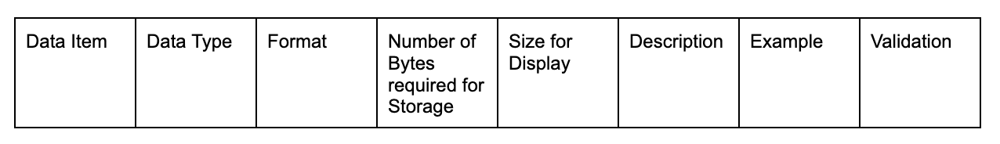

Syllabus
Create data dictionaries as a tool to describe data and data types, structure data, and record relationships- char (character) and string
Learning Intention and Success Criteria
Learning Intention - Students will:
- Develop the ability to create data dictionaries as a tool to describe data and data types, understand data structure, and record relationships, focusing on char (character) and string data types.
Success Criteria - Students can:
- Demonstrate understanding of data dictionaries and their purpose.
- Identify and describe char (character) and string data types.
- Create a data dictionary that accurately represents a given dataset or data structure.
- Effectively describe data and data types within the data dictionary.
- Utilise the data dictionary to understand and record relationships between different data elements.
Content
Data Dictionary
A Data Dictionary is a form of documentation that keeps track of the variables (data items) that are used in the development of a software program. This ensures that the programmer can effectively recall and communicate to others about the purpose of the variables used in a section of code.
In this course, the following metadata is required in the columns of a data dictionary:

Data Item
-
The name of the variable
Data Type
-
The data type of the variable (i.e. integer, string, boolean, float)
Format
-
The general input/output mask of the variable (i.e. XXXXXX for a 6 character string)
Number of Bytes for Storage
-
Number of bytes required to store data the variable (i.e. 4 bytes for an integer)
Size for Display
-
Number of characters required to display the variable when printed (i.e. 10 for the date 01/05/2021)
Description
-
Describes the purpose and use of the variable
Example
-
An example of data that can be stored in the variable
Validation
-
Checks that have been put in place (i.e. IF statements) that are used to ensure data integrity (i.e. there are only 12 months in a year)
Video Walkthrough
Sources
- List sources here
Practical